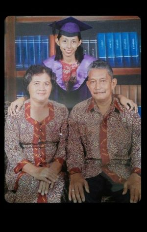

Zareen Anak Chom attended Sekolah Kebangsaan Simunjan from year one to six and sat for the UPSR examination at the school with excellent results in all subjects.She continued her schooling in the national secondary school from form one to form six by taking history and geography which were her priority subjects in addition to the main subjects that were compulsory to pass at that time.Her results for the secondary school level and form six got an outstanding achievement which enabled her to enter Universiti Sains Malaysia to take a bachelor’s degree in the country with the first specialization being history and the second specialization being geography.
Zareen Anak Chom also while studying her degree was once an interim teacher at Kidurong national secondary school from 2016 for seven months. Thereafter the day after the date of being an interim teacher expires, She chooses to remain a regular academic teacher at the same workplace while she is interim. She active in participate in sports because she was once an athlete during her schooling by representing schools and districts that at that time were still burning her sporting spirit.